完全に無料なGithubブログを始める方法

はじめに
前回、Githubに引っ越した話をしたので、早速引っ越した方法を紹介します。
最初に言っておきますが、この方法は『blog for hackers』と呼ばれるくらいなので、「ブログ初めてなんですー！」みたいな人はやめたほうがいいと思います。
ただ、その分だけメリットも大きいので、試す価値は十分あると思います。
Githubブログとは
Githubはご存知かと思いますが、ブログサービスではありません。
Githubブログは、Github Pages というサービスに目をつけて、ブログを作ってしまおうと思ったハッカーたちが考えた方法です。
要するに 裏ワザ ですね。
メリットは、
- 完全に無料
- Google Adsenseなどの広告も自由
- 容量は（ほとんど）無制限
- アップロードして瞬間にバックアップされる
デメリットは、
- ある程度の専門知識が必要
- 静的ファイルしかアップロードできない
- 簡単に記事を作成できるという訳にはいかない
- 記事生成に時間が掛かる
です。かなりメリットが大きいと思うので、是非挑戦してほしいです。
Githubブログの基本
Githubをブログとして活用するために、基本が３つあります。
- 静的ファイル(html, css, js)しかアップロードできない
- できればターミナル(コマンドプロンプト)と仲良くなった方がいい
- gitの使い方は最低限覚える
まず、静的ファイルとはPHPやデータベース以外のことです。かなり制約がありますが、逆に言えばとてもシンプルです。
次に、ターミナル（コマンドプロンプト）を使う機会が増えると思うので、親しんでおくほうが良いと思います。
- Windows: コマンドプロンプトの使い方 - AdminWeb
- Mac: ターミナルの使い方 - AllAboutデジタル
最後に、Githubは git（ギット,ジット）というシステムをベースにしているので、最低限覚えておくと良いと思います。
3分で試しに作ってみる
説明だけじゃ実感できないと思うので、作ってみましょう。
是非あなたも手を動かしてやってみてください。
まずアカウントの取得
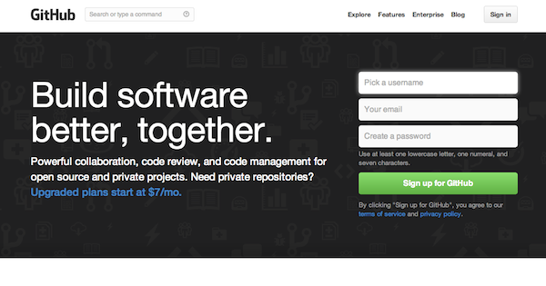
http://github.com にアクセスします。
いきなり本番になるのは怖いので、10 Minutes Mail を使って試してみましょう。

10 Minutes Mailにアクセスするといきなりメールアドレスが発行されるので、メールアドレスをコピーし、早速Githubに入力します。
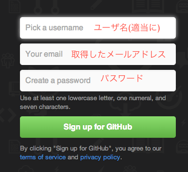
そうするとプランを選ぶ画面が出ます。
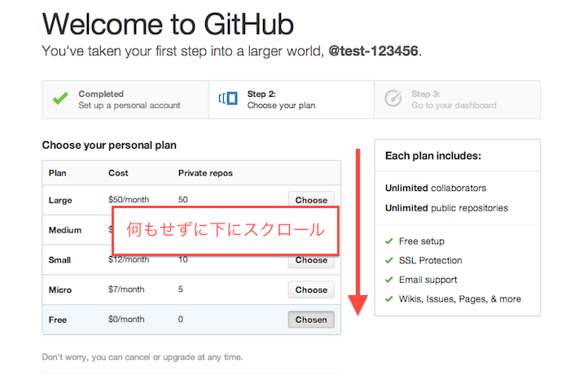
とりあえず無視し、一番下にスクロールして「Finish SignUp」をクリックします。
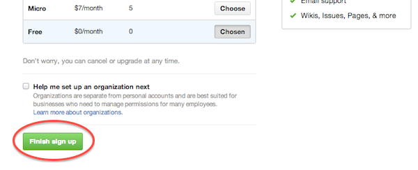
これでアカウントの登録は完了です。
リポジトリの作成
アカウントの作成が完了すると、以下のアカウントのトップページが表示されます。
ちょっと見づらいですが、右上の"＋"マークをクリックして下さい。
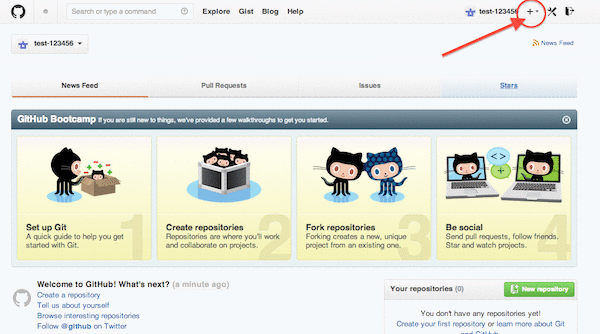
表示されたメニューから "New repository" を選択します。
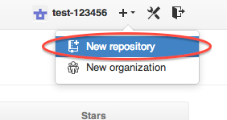
ここが最も重要です。リポジトリ名は必ず
(ユーザ名).github.io ← ドット ギットハブ ドット アイオーにしてください。（間違えると何も起きません）
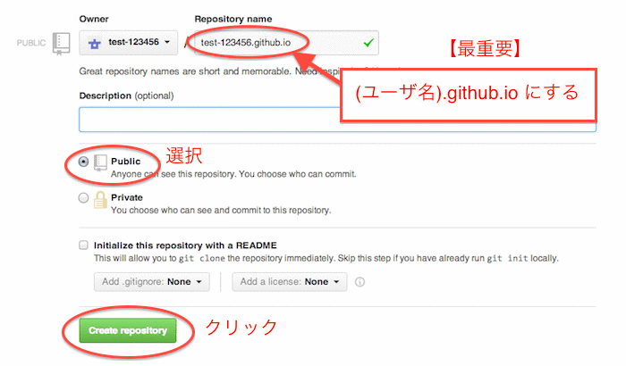
あとは"Public"を選択して"Create repository"をクリックすればOKです。
Github Pageの自動生成
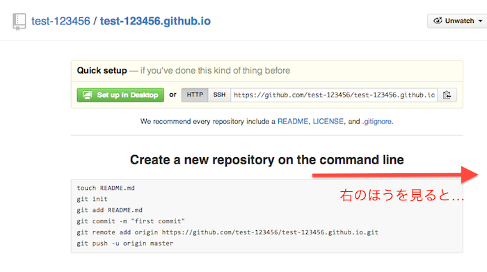
リポジトリが出来ればあとは作るだけですが、今回はGitの知識がいらない自動ページ生成を使います。
このページの右のほうを見るとメニューがあるので、設定をクリックします。
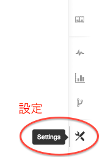
設定画面は下のような漢字です。英語は読めなくても良いので、下の方に行きます。
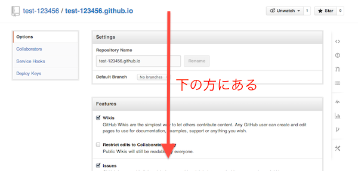
すると、ちょっと行ったところに"Github Pages"の項目があるので、"Auto Page Generator"をクリックします。
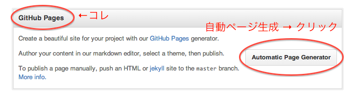
そうすると、文章を入力する画面が出ます。間違えると面倒なので、下記をコピーして入力して下さい。
## Welcome
Hello **Github Pages**!!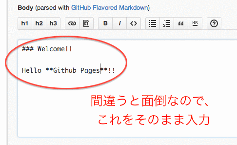
入力が済んだら、一番下の"Continue to layouts"をクリック。
そうすると・・・ざわ・・・
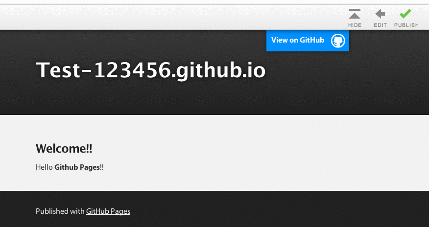
おぉ！ちゃんとページが出来上がってますね！
上のリストから好きなテーマを選べるようです。

気に入ったデザインになったら、真ん中の右上の"Publish"をクリックします。
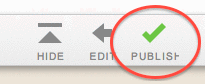
…と、これで編集は完了です。
ブラウザで確認（ワクワク）
最後はいよいよウェブサイトがちゃんとリリースされているか確認します。
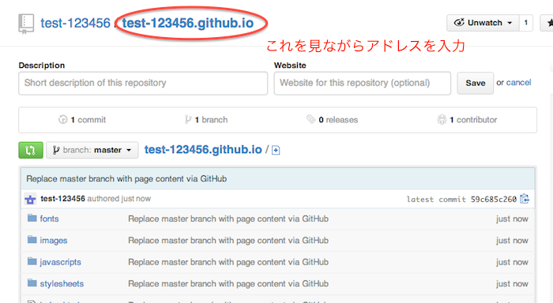
さっきの作業の後に移動したページに表示されている、
(ユーザ名).github.io ← ドット ギットハブ ドット アイオーというURLをウェブブラウザに入力します。（リンクを踏むと別のところに行くので注意。）
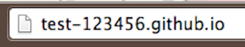
よし、はりきって「エンター！」・・・
・・・
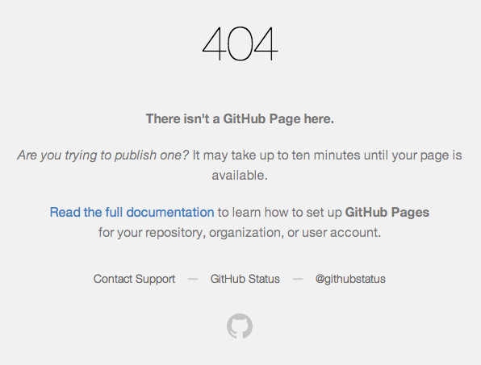
・・・あれ？？？
表示されませんね。
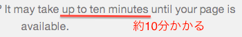
よく見ると、約１０分待って下さいと書いてあります。
実は最初は１０分程度かかります。2回目以降の更新はだんだんと早くなるので安心して下さい。
ちなみに10分後はこんな感じです。
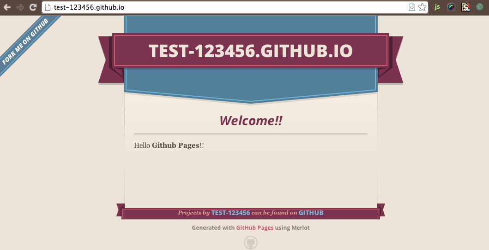
いい感じですね。
実際にはもっと手順を踏むことになりますが、概略はこんな感じです。
是非あなたも1回は手を動かしてやってみてくださいね。その方が忘れにくくなります。
よくわかったけど、HTMLページとか手作業じゃ無理…
今のでイメージはつかんで頂けたかと思います。
ですが、もしツールなしではページ一つ一つを自分で作成する作業が待っています。
もちろん、すべて手作業でするのは途方も無いので、専用のツールを３つ紹介します。
これらのツールを使うと、まるで動的サイトのようなブログが生成されます。
静的サイト生成ツール紹介の前に
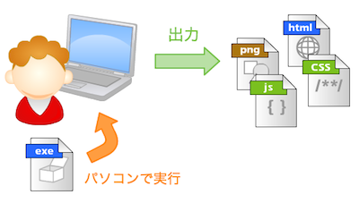
まず前提として、これらの生成ツールは、あなたの手元のコンピュータ上でプログラムを動かし、最終的に静的サイトを出力し、アップロードすることを目的としています。
作業中は動的サイトとほとんど変わりませんが、結果は静的サイトになるという魔法のようなものです。
言語の種類がRubyやPythonなどありますが、手元のコンピュータに合った、インストールしやすいものを選ぶと良いと思います。
どの言語を選んでも、最終的に出力されるのは HTML,CSS,JS なのでどれでもかまいません。
Githubブログツール３選
Octopress
Ruby製のブログ生成ツールで、日本では最もメジャーなツールです。
| 項目 | 特徴 |
|---|---|
| 言語 | Ruby |
| 用途 | ブログ |
| 生成エンジン | Jekyll |
| マークアップ | Markdown |
| テンプレート | Liquid |
| テーマ | 多 |
| ドキュメント | 主に英語, 日本語解説 多 |
| 難易度 | ★☆☆ |
Octopressは日本のユーザに非常に人気があるため、解説が豊富です。
特徴としては、テーマが充実（http://opthemes.com/ など）しており、何もしなくても整ったブログが完成するのでとても手軽です。
エンジンにJekyllを採用しており、安定しています。
記事の記述にはMarkdownを採用していますが、Liquidで拡張されるのでYouTube記法などを作ることができるので便利です。
- サイト例: 酒と泪とRubyとRailsと
Pelican
PyPy (Python) 製の静的サイトジェネレータです。Octopressに比べるとサイト生成が高速だと言われています。
| 項目 | 特徴 |
|---|---|
| 言語 | PyPy (Python) |
| 用途 | 汎用 |
| 生成エンジン | Jekyll |
| マークアップ | reStructuredText, Markdown, AsciiDoc |
| テンプレート | Jinja |
| テーマ | 多 |
| ドキュメント | 主に英語 |
| 難易度 | ★★☆ |
PyPyは高速なPython実装のため、サイト生成が高速です。
静的サイトジェネレータは、動的ファイルがない分だけ、生成（コンパイル）に非常に時間がかかります。そのデメリットを解消しているのはメリットだと思います。
また、Markdown以外にも２種類の記述言語が選べる点も良いです。
日本語ドキュメントが少ないのがデメリットですが、メリットも大きいと思います。

harp
harpはNode.js製の静的サイトジェネレータです。非常にシンプルな手法で、かなりの拡張性があります。
| 項目 | 特徴 |
|---|---|
| 言語 | Node.js |
| 用途 | 汎用 |
| 生成エンジン | 不明 |
| テンプレート | Jade,Markdown,EJS |
| スクリプト | CoffeeScript,JavaScript |
| スタイルシート | Sass,Scss,LESS,Stylus |
| テーマ | なし（harp.ioは多） |
| ドキュメント | 英語 |
| 難易度 | ★★★ |
実は当ブログもこのharpを使っています。
harpは上記のJekyll系ツールとは一線を画していて、非常にシンプルです。
jsonをある意味データベースとして使うことで、非常に多くの要望に対応することができます。
ただ、ブログ用途としては少し敷居が高いので、あまりおすすめはしませんが、非常に役に立つツールだと思います。
- サイト例: このブログ
選び方
まずは、Octopressを使うことをおすすめします。
もしOctopressに満足できなくなったら、他のツールに移行するといいと思います。
個人的には、harpが一番スマートな方法をとっているので、最終的にはメリットが大きいと思います。
まとめ
今回はかなり早足で解説しました。
ただ、一番の魅力は完全に無料で自由にできるということなので、がんばる甲斐はあると思います。
次回以降はそれぞれのブログ生成ツールを解説していこうかなと思います。

技術評論社
売り上げランキング: 10,843
 | 最も優れたキーボードランキング |
 | 最も素晴らしいマウスランキング |
 | 世界の凄すぎるダンボールアート10選 |
 | 世界のインターネット事情 - Android vs iPhone |
 | サイバー犯罪の標的となっている『Bitcoin』 |